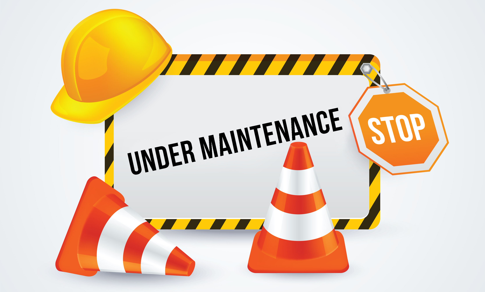

During the deployment part of the project, we also involve the client company's system administrator in the process so that they are aware of the network architecture. After the installation is complete, we walk him through the entire network so that he can troubleshoot any minor problems.
Once a month we recommend dusting your computers and installing updates.
Every six months, our company provides a comprehensive, full-service maintenance that includes a review of your firewalls, software and installed devices (router, switch, server, pc) and the necessary repairs and updates.
HPC server maintenance, usesage
Sending data from the Data Storage server to the cloud off-site, maintenance of storage, possible restoration (raid :)
If the administrator is unable to troubleshoot the problem, you can reach us on 06301234567.
